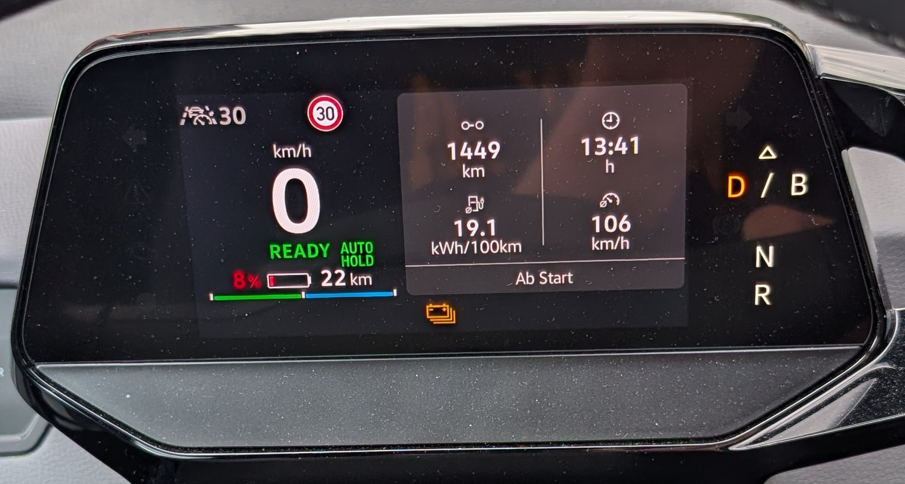
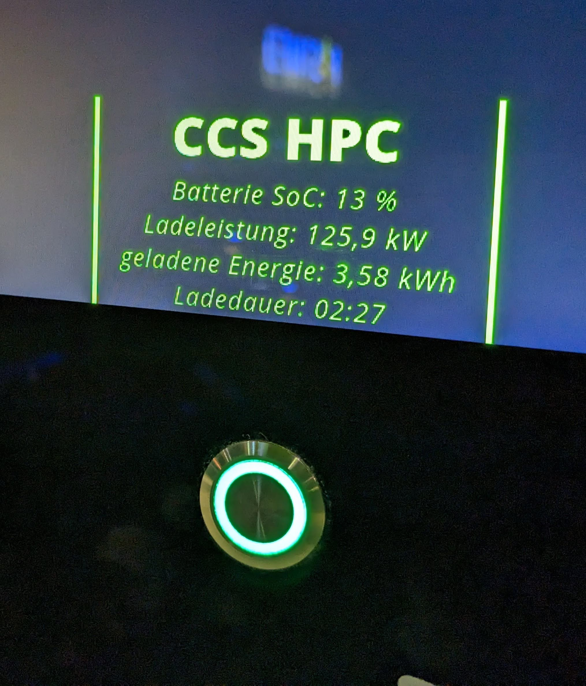
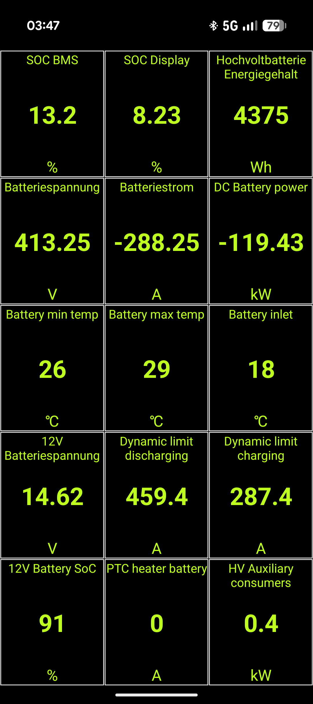
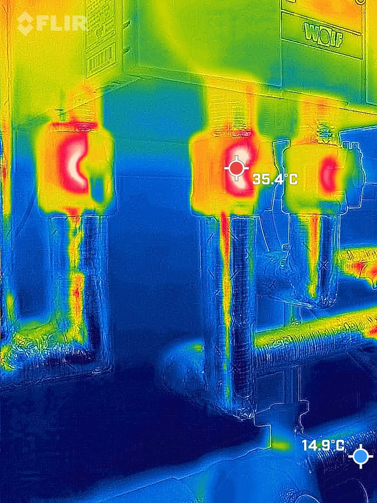
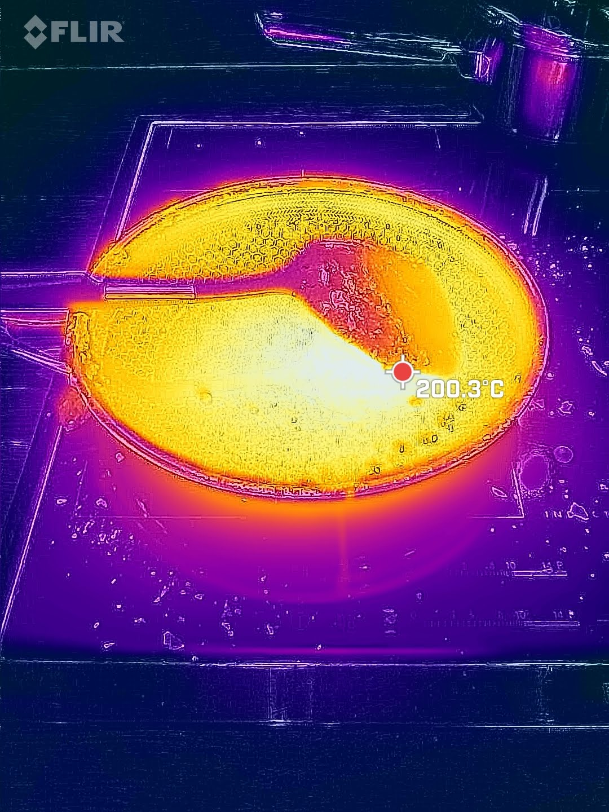
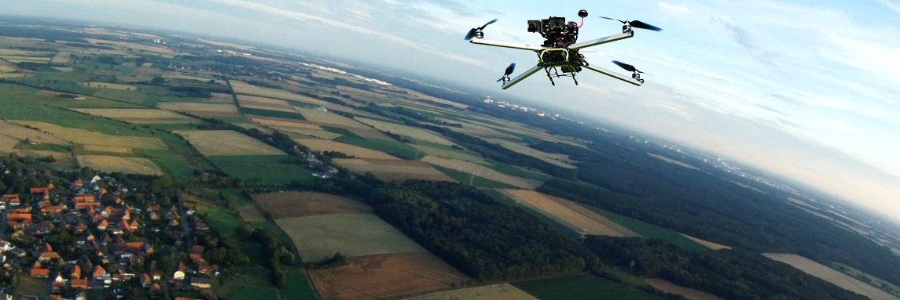
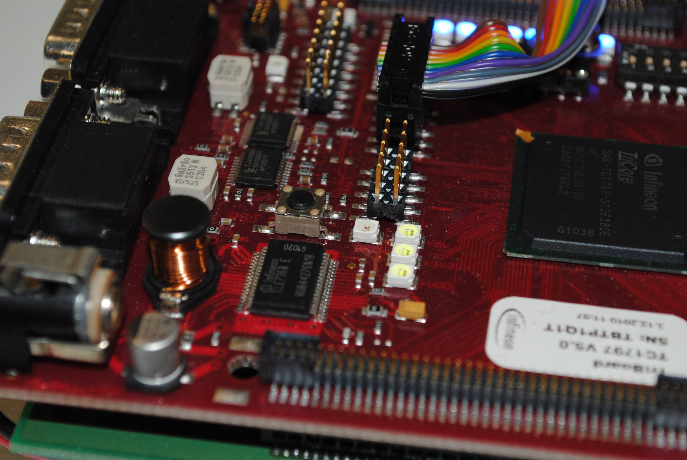

Der reale Verbrauch entscheidet über Reichweite und Kosten. Hier geht es um Fahrprofile, Rekuperation und darum, was ein E-Auto im Alltag wirklich zieht.

Von der heimischen Wallbox bis zur High-Power-Charging-Säule: Ladeleistung, Ladekurve und Preise pro kWh bestimmen, wie schnell und wie günstig Strom in die Batterie kommt.

Ein Blick unter die Haube der Hochvoltbatterie: reale Zellspannungen, Temperaturfenster und dynamische Lade-/Entladegrenzen – ausgelesen direkt aus dem Batteriemanagementsystem.

Effizienz beginnt an der Anlage: Vorlauftemperaturen, Hydraulik und Regelung entscheiden über die Arbeitszahl. Die Wärmebildkamera macht Verluste und Betriebszustände direkt sichtbar.
Sonnenertrag, Eigenverbrauch und Batteriespeicher – wie viel Autarkie ist realistisch? Dieses Thema wird hier Schritt für Schritt ausgebaut.

Ob Heiztechnik, Elektronik oder Alltag – die Wärmebildkamera zeigt, wo Energie fließt und verloren geht. Ein Werkzeug, das quer durch alle Themen hier hilft.

Vom Eigenbau-Multicopter bis zu Steuerung und Luftbild: Aerodynamik, Antrieb und die rechtlichen Rahmenbedingungen des Drohnenfliegens.

Wo Software auf Hardware trifft: Mikrocontroller, Sensorik und Steuergeräte – von der Schaltung bis zur eingebetteten Firmware.
Aus Ideen werden Schutzrechte: erteilte Patente rund um Fahrerassistenz, Sensorik und Funktionskonzepte.